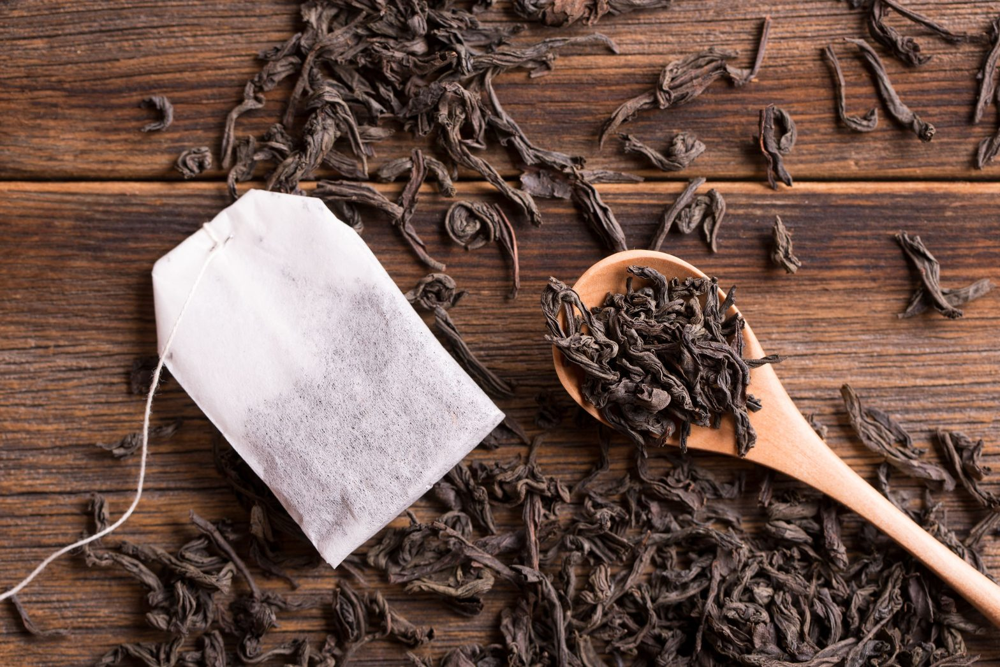
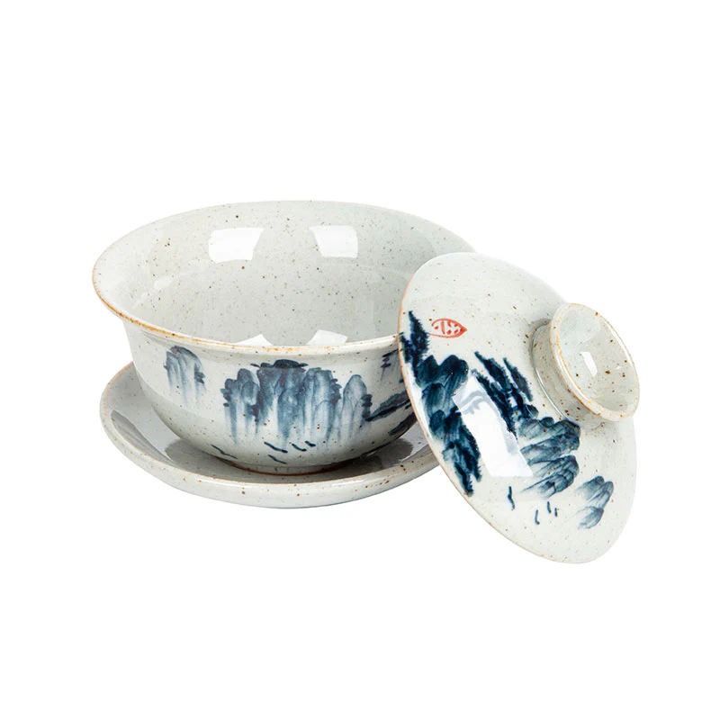
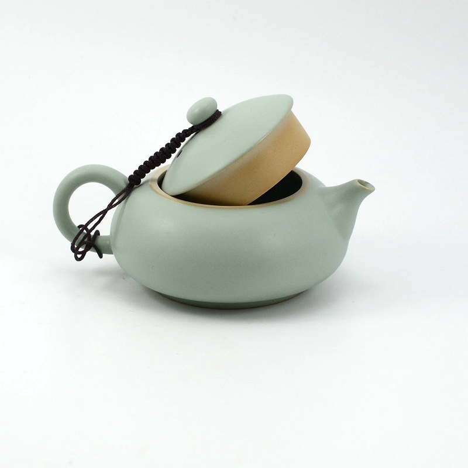
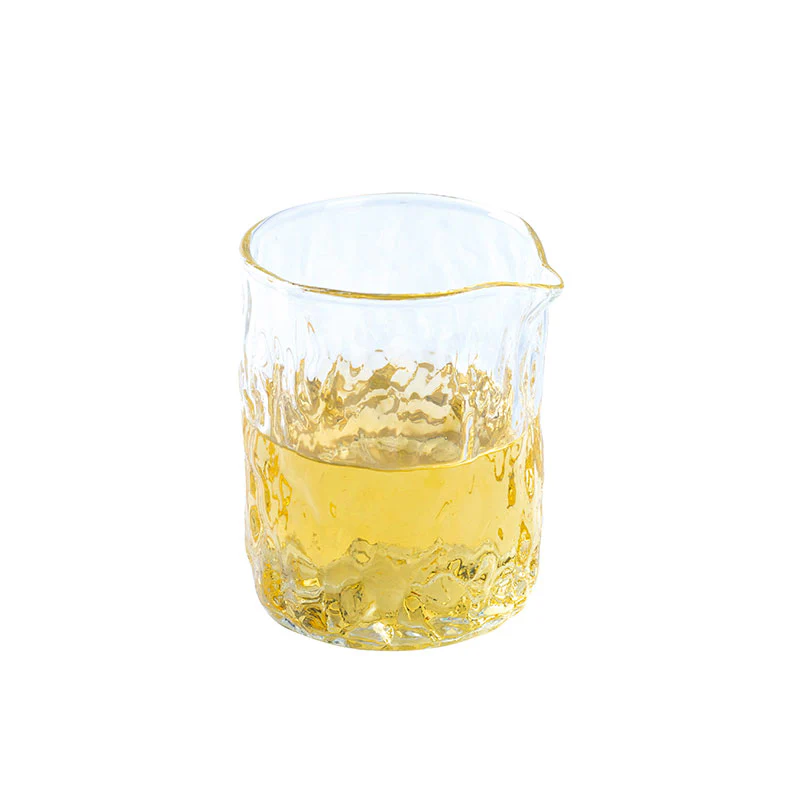

|
La nivelul cel mai elementar, prepararea în stil gongfu înseamnă să pui o mulțime de frunze într-un
vas mic, să le fierbi în apă fierbinte și să faci mai multe infuzii în timp. Cantitatea de frumze variază în funcție de gusturile personale și ceai. Se poate folosi un cântar de precizie pentru a măsura exact cantitatea dorită, dar, ca regulă generală, se măsoară vizual frunzele astfel încât acestea să ascundă complet sau cel puțin în mare parte fundul vasului folosit pentru infuzie. În general, ceaiurile verzi, galbene și albe sunt folosite în cantități mai mici, în timp ce ceaiurile oolong în formă de bilă și ceaiurile închise la culoare, cum ar fi cel negru, pu'er sau liubao, sunt încă gestionabile în porții mai mari. Cel mai bun mod de a găsi o doză bună pentru fiecare ceai este prin experiență și se pot modifica ceilalți parametri de preparare (temperatura apei, timpul fiecărei infuzii) astfel încât ceaiul să nu ajungă să fie nici prea puternic dar nici prea slab. |
|
|

Via budleaf.com
|
Un detaliu foarte important: frunzele își degajă cel mai bine esența atunci când ajung să se
deschidă și să se răspândească în tot vasul de preparare. Astfel, nu se foloseste o sită sau
săculețele obișnuite de ceai în timpul infuziilor. Ce este totuși absolut necesar pentru a bea ceai in stilul gongfu este un vas de preparare, cești și o modalitate de a încălzi apa: |
|



Gaiwan, ceainic și gong dao bei, via teaware.house
|
|